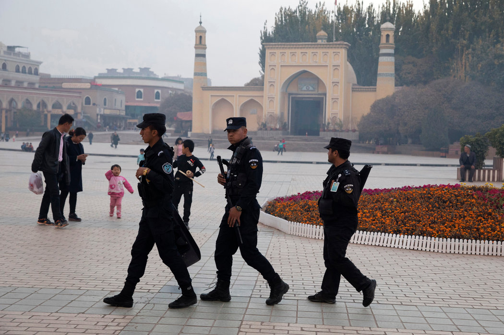
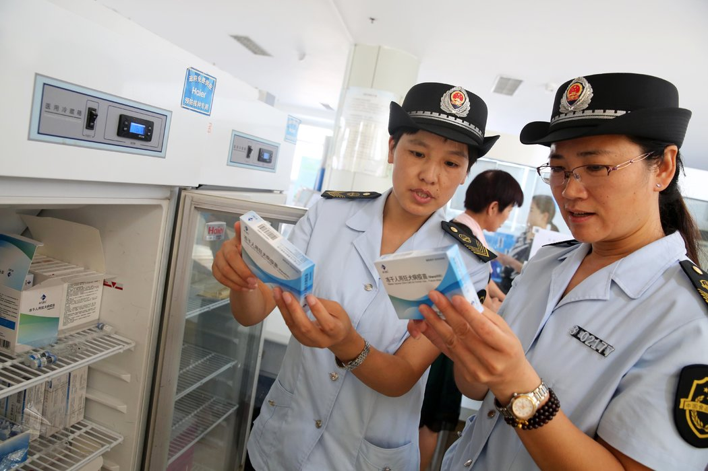
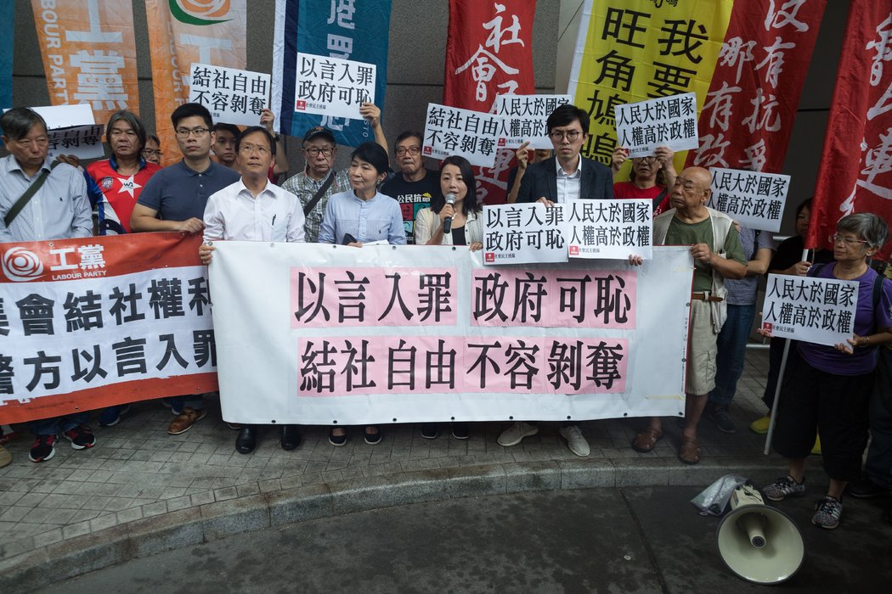
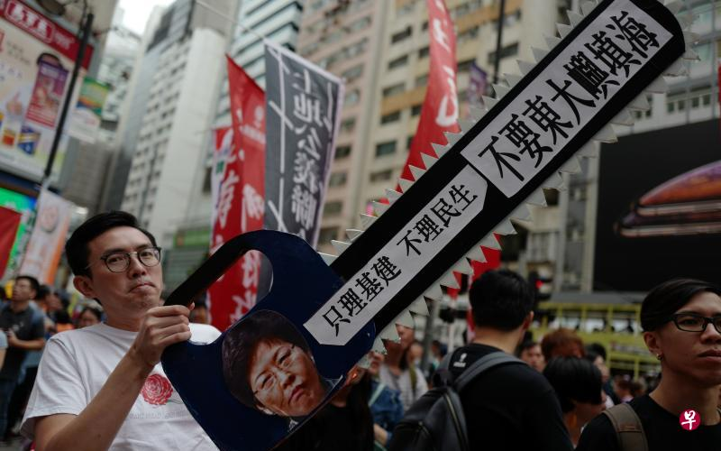
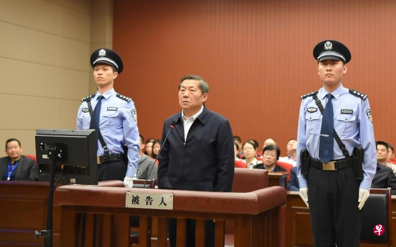

本板块推文本板块推文精选国外主流媒体报道，由编者翻译转载，并提供报道来源网址 (由于某些原因，网站可能无法打开)，推文内容不代表编者主张。本板块一周一推，力 求客观，致力于为大众打造观察中国的新视野。精选国外主流媒体报道，由编者翻译转 载，并提供报道来源网址(由于某些原因，网站可能无法打开)，推文内容不代表编者主 张。本板块一周一推，力求客观，致力于为大众打造观察中国的新视野。
北京——在越来越多的国际批评声中，中国周二对该国的穆斯林少数民族大规模拘押和思想灌输行动做出了迄今为止最详尽的辩解，一名高级官员将那些在中国遥远西部地区普遍存在的拘禁营描述为人道及合法的职业培训中心。
人权团体、西方政府、美国议员以及一个联合国委员会均对拘禁中国西北部新疆地区维吾尔族及其他穆斯林少数民族的“教育转化”营予以抨击。数十万人被关押在这些拘禁营里——有估计认为有100万人——并且在已逃亡国外、曾遭到关押的人的描述中，这些拘禁营实际上等同于监狱，会进行严厉洗脑。
但在官方新闻机构新华社发表的发言中，自己就是维吾尔族人的新疆政府主席雪克来提·扎克尔称这些拘禁营为针对恐怖主义的合法防卫行为。他表示，这些设施为维吾尔族人及其他穆斯林少数民族提供了职业技能、汉语及法律方面的培训。
这些拘禁营是“新疆探索消除滋生恐怖主义、极端主义环境和土壤，预防暴力恐怖犯罪的有效举措，”扎克尔表示。“自开展以来，得到了全疆各族群众的高度认可和衷心拥护。”
扎克尔没有给出对被送往拘禁营的人数的估算，但似乎首次承认了违背人们意愿，每次将他们关押在这些设施里几个月或几年的做法。他表示，这些计划对付的是涉嫌有不当行为，但情节较轻、不需要判处刑罚的人，并且表示他们只有在符合特定标准、签署协议后，才能获得“结业证书”。他表示，一些被关押者正在为2018年年底被释放及分配工作做准备。
他还建议让该行动多年持续下去。新疆“去极端化”计划正在展现出成果，他表示，“但其长期性、复杂性、尖锐性依然突出，必须保持高度警惕”。
直至现在，中国官员很少谈及自去年以来迅速扩散至新疆各地的关押行动。八月，在日内瓦的一个联合国委员会上，中国代表团的一名高级官员为这些举措作出辩护，并且否认存在大规模拘押行为。
但扎克尔的发言相当于对灌输计划的首个有力辩护，该计划脱胎于中国国家主席、共产党总书记习近平推出的政策。
上周，新疆政府还发布了对“去极端化”计划的修订，经过修订的条例首次明确对这些再教育营进行授权。
“经过一年多的否认后，共产党决定抢在前头，在其合法性及这些拘禁营的本质上给出自己的观点，”澳大利亚拉筹伯大学(La Trobe University)新疆专家雷国俊(James Leibold)在邮件中表示。“共产党的中央领导层如今似乎决心要将他们的做法‘标准化’、‘合法化’。”
北京选择这一时机发表上述言论，似乎是要为11月初召开的联合国人权理事会(United Nations Human Rights Council)会议做准备。雷国俊表示，届时外国政府将有机会就拘禁计划及其他具有争议的安全措施，对来自北京的官员提出问题。西方政府已经暗示，新疆将是该会议上优先讨论的问题。
“我们对可靠报道指向的”新疆“人权严重恶化的情况感到十分忧虑，”欧盟最高外交及安全政策官员费德丽卡·莫盖里尼(Federica Mogherini)本月早些时候告诉欧洲议会(European Parliament)。她表示，人权理事会的会议将提供一个提出这些关切的机会。
上周，华盛顿一个两党委员会发布了一份报告，对这些再教育营予以谴责。委员会中的议员，其中包括参议员马尔科·卢比奥(Marco Rubio)，提出了一项法案，该法案将为拘禁计划对中国进行惩罚。
“在中国，政府对宗教及少数民族的压迫行为直接出自乔治·奥威尔(George Orwell)的小说情节，”据福克斯新闻报道，近期辞去美国驻联合国大使职务的尼基·黑利(Nikki Haley)周一表示。“这是当今全世界对平民的最大规模的拘禁行为”。
但扎克尔的说法表明，中国会主张这些拘禁营拥有强大的法律后盾，并且是该国实现联合国消除恐怖主义目标的努力的一部分。在2014年之前，一系列涉及怀不满情绪的维吾尔族人的暴力袭击及暴动事件一直困扰着中国。
“现在新疆不仅很美丽，”扎克尔说，“而且很安全、很稳定。”
他没有说遭到拘押的人的数量。带有明显民族主义倾向的中国报纸《环球时报》的著名编辑胡锡进周一表示，他知道人数有多少，并且对100万这个数字予以否认。
人权团体暗示，这些拘禁营地的存在指向了存在于中国更深层次的问题。
“新疆当局为拘禁营拙劣正名的做法，只显示出在中国‘法治’的真正意思，”人权观察(Human Rights Watch)研究中国的研究员王松莲(Maya Wang)表示。“共产党按照自己的意愿随意歪曲它，把它当成武器，去针对那些被他们认为是政治敌人的人。”
北京——中国对一家导致数十万儿童接种有问题疫苗的公司处以91亿元人民币罚款，这个可能令该公司陷入困境的金额，对这个丑闻缠身的行业发出迄今为止最为强硬的信号，表明它将面临更为严格的法律环境。
针对长春长生生物科技公司的罚款，比此前卷入安全丑闻的疫苗制造商受到的处罚都要大，该惩罚是在中国不断壮大的中产阶级日益感到焦虑之时做出的。这些中产阶级已经对大量药品和食品安全丑闻感到愤怒不已，丑闻对该群体的安全感构成了威胁。
“国家出台处罚措施也是为了建立有效的秩序，”北京大学免疫学教授王月丹表示。“今后大家都不敢去碰这个高压线。”
政府还禁止该公司董事长高俊芳及其他14名高管从事疫苗行业的经营活动。他们仍在接受调查，可能会面临刑事处罚。
中国官员周二晚间表示，他们已经对长春长生征收了这笔罚金。长春长生位于中国东北吉林省，其股票在中国南方城市深圳交易。周二公布的罚款明确与一种狂犬疫苗的数据造假有关。政府没有透露受到影响的疫苗数量及人数。
但该公司的疫苗丑闻比狂犬疫苗要大得多。政府的调查于8月表明，该公司还生产了近50万支不符合标准的白喉、破伤风和百日咳疫苗。
政府表示，长春长生使用过期疫苗原料、更改生产批号，还销毁并伪造生产记录。为了掩盖其违法行为，该公司还销毁了一个计算机硬盘。
与此前的疫苗丑闻不同，这起涉及长春长生的事件在全国各地引发公愤，原因是主要接种涉事数十万支问题的是婴儿，而这个国家许多夫妻只有一个孩子。
官方新闻机构新华社称这是有史以来对疫苗公司作出的“顶格处罚”及“最严格处罚”决定。
“我从来没听说过这么大金额的罚款，”北京大学药事管理系主任、医保方面的政府顾问史录文表示。“这能让人们对这个生态环境放心。”
根据《纽约时报》对此前中国疫苗丑闻的分析，疫苗制造商在此前事件中支付的罚款平均为140万美元（约合人民币970万元）。
另外，据周二一份由四个政府机构联合发布的公告显示，长春长生将向接种该公司狂犬疫苗的消费者提供20万到65万元人民币不等的赔偿。周二一份向深圳交易所提交的文件显示，该公司表示将设立一个专项赔偿基金。
尽管这笔罚款很可能会让现阶段的长春长生关门，但该公司可能不会永远消失。中国需要一个强健的疫苗行业，不太可能将能够帮助该国实现其医疗保健雄心的设施完全关闭。
“国家并不想说因为这个事情就关闭或者彻底消灭掉这个企业，”北京大学的王月丹表示。“这不符合我们国家疫苗生产的布局。”
最新的一起丑闻发生后，习近平主席将数十名高级官员撤职，并且承诺迅速整顿该行业。
中国国家食品药品监督管理局的法律顾问李江表示，长春长生进行了“具有组织性、持续性、危害性的违法活动”。
这起事件“令人触目惊心，是药品安全领域极其罕见的违法案例，”新华社援引他的话表示。
罚款的决定由国家药品监督管理局和吉林省食品药品监督管理局作出。在未能及时公布其半年营收报告后，长春长生的股票自8月31号以来就已停牌。
中国国家统计局10月19日发表的数据显示，自今年以来，中国经济增速持续放缓，其中第三季度国内生产总值（GDP）同比增长率为6.5%，低于此前路透社预测的6.6%。同时，该增长率也是2008年全球金融危机以来中国最慢的季度增长率。
统计局发表的数据称，中国前三季度国内生产总值为650899亿元，其中第一季度同比增长6.8%，第二季度增长6.7%，而第三季度增长6.5%。数据还显示，9月工厂产量增长低于预期，而10月零售销售则略高于预期。
中国2018年的GDP增长目标为6.5%左右，尽管前三季度增速仍未低于目标值，但随着中美贸易战影响的逐渐展现，中国第四季度经济的增长可能面临更大压力。
经济危机
凯源资本董事总经理陆修泉（Brock Silvers）告诉BBC中文，这一低增速符合外界的普遍预期。“中国对内投资也在降低，同时，债务仍然是一个巨大的风险，加上全球利率的上升，货币就贬值了。在某种程度上，中国鼓励货币贬值并以此来对抗美国加征的关税。因此，经济增速变缓并不意外。”
陆修泉认为，真正的问题是，中国增加流动性及基础设施支出的政策是否能成功将降幅降至最低，或者中国的宏观经济数据是否在某种程度上没有反应真实状况。
今年9月，中国前央行行长周小川在接受CNBC采访时还表示，贸易战的负面影响不是很大，对中国GDP的影响不到0.5个百分点。但10月，国际货币基金组织（IMF）警告贸易战对中美两国乃至世界经济的长期负面影响时指出，贸易战对中国造成的损失将大于美国。
多年来，中国一直在努力更多地依靠国内消费而不是出口来实现增长。中国在进行大量基建的同时也产生了大量的债务，因此中国政府一直在努力控制这些债务以及房地产泡沫对经济增长带来的影响。
最近几个月，中国已采取一定措施支持经济发展，例如，7月，中国央行向国内金融体系注入了5020亿元人民币资金，以帮助提振日趋疲弱的经济。
BBC亚洲商务记者瓦斯瓦尼（Karishma Vaswani）称，一位中国观察员近期告诉她，中国的选择并不多，因为中国负债非常高，也在试图管理自身经济的系统性风险，因此政策制定者不愿意像2008年之后那样采取措施刺激经济。
“北京正在两条战线上作战，所以他们能用的资源并没有那么充分。同时，中国的对手美国身上的不确定性及反复无常性也在日益增加。这些都不利于中国的经济前景。”瓦斯瓦尼说。
“除非与美国达成意外贸易协议，否则中国经济将迎来第四季度的萧条。北京现在最明智的选择可能是做出让步并与美国达成贸易协议，然后公开宣布获胜并转向更紧迫的经济问题。”陆修泉说。
股市恐慌
与疲软的中国经济并行的，是不断下跌的中国股市。
中国信达证券研发中心近期发布的报告显示，2018年初至今，全球主要股指下跌幅度最大的为深证成指，其次为上证综指，跌幅分别超30%和20%，并且2018年全部A股上涨个股数量创新低，仅有6.86%的个股保持上涨。报告分析，中国国内金融区杠杆带来的流动性紧缩是影响股市市场信心的内因。
在中国国家统计局发表数据的同一天，中国国务院副总理刘鹤接受中国央媒采访时表示，中国股市出现明显波动和下滑是由诸多因素造成的。
“中美贸易摩擦对市场也造成了影响，但坦率地说，心理影响大于实际影响，目前中美正在接触。”刘鹤称。
对于近期蔓延的“私营经济退出论”的恐慌，刘鹤也做了回应，称“民营经济在整个经济体系中具有重要地位，贡献了50%以上的税收，60%以上的GDP，70%以上的技术创新，80%以上的城镇劳动就业，90%以上的新增就业和企业数量。如果没有民营企业的发展，就没有整个经济的稳定发展。”
对于刘鹤的此番发言，有微博网友评论称，“口惠而实不至”。
除了刘鹤，中国央行行长易纲、银保监会主席郭树清和证监会主席刘士余也在同一天就A股发声，暗示A股应该可以表现得更好，试图“稳定军心”。
易纲称，当前中国股市估值已处于历史较低水平，与中国稳中向好的经济基本面形成反差。刘士余则暗示，A股将引来更多入市资金，因为中国会“鼓励私募股权基金通过参与非公开发行、协议转让、大宗交易等方式，购买已上市公司股票，参与上市公司并购重组”。
对位三位的喊话，网友并不买账。有网友评论称，“没有具体政策刺激的话，光力挺该垮一样要垮”。
还有网友称，“搞得一地鸡毛，形象崩塌，诚信缺失，现在喊话有什么用？”
BBC中文网
杨凯莉涉“侮辱国歌”被行政拘留 中国网红碰了《国歌法》红线
（10月13日，中国上海警方 @警民直通车-静安 在微博发布通报称，10月7日晚，涉事人杨某莉在其住宅内进行网络直播时，违反了《中华人民共和国国歌法》（以下简称《国歌法》）有关规定，被上海市公安局静安分局处以行政拘留5日。）
纽约时报中文网

港府禁止一名民主倡导者竞选议员
（周五，香港政府取消一名民主倡导者竞选当地立法会席位的资格。这是这座半自治中国城市一系列破坏反对派阵营政治力量的最新举措。）
女律师诉警察暴行，中国“我也是”运动再起波澜
路透社
Taiwan invites Pope Francis to visit, following landmark China
台湾邀请教皇弗朗西斯访问，遵循具有里程碑意义的中国
（台湾邀请教皇弗朗西斯访问，其总统蔡英文说，就在梵蒂冈与中国任命主教达成里程碑协议几周后，中国声称这个自治岛屿是自己的。）
BBC中文网
美国推“毒丸条款”：在贸易上孤立中国的重型武器
（毒丸”（poison pill）——美国商务部长罗斯用这个词形容刚刚签署的美墨加贸易协定（USMCA）中的32.10条款。该条款规定，协议中的任何一成员国与“非市场经济国家”达成自由贸易协议，则其它成员国可以在六个月后退出并建立其自己的双边贸易协定。）
联合早报

香港泛民议员扬言立法会“拉布” 6000人上街反“明日大屿”填海计划
纽约时报中文网
美国大规模扩大对外援助，反制中国影响力
（特朗普总统试图对中国日益增长的地缘政治影响力进行反制，开始大规模扩大对外援助，为非洲、亚洲和美洲的基础设施项目提供资金——这是在向他曾试图破坏的一项倡议提供支持。）
BBC中文网
中宣部见港媒高层：港媒集体删改报道引发自我审查的忧虑
（约20名香港媒体高层周二（16日）在北京与中国中宣部部长黄坤明会谈，访京团团长、星岛集团行政总裁萧世和在会后对媒体说，黄坤明在会上提到“希望香港媒体不要成为干扰内地政治的基地”。）
联合早报
自治区主席扎克尔：新疆职业教育为有效防暴恐
（新华社报道，扎克尔近日在接受该社记者采访时说，新疆开展职业技能教育培训工作，是探索消除滋生恐怖主义、极端主义环境和土壤，预防暴力恐怖犯罪的有效举措。当前新疆呈现出大局稳定、形势可控、趋势向好的态势，已连续21个月未发生暴力恐怖案件。）
纽约时报中文网
中国为新疆拘禁营辩护，称其人道且合法
10月18日
联合早报
呼应美国近日严厉批评 蔡英文谴责中国大陆图改变台海现状
（就任总统以来，蔡英文每谈论两岸关系总会重申“四不”主张，即善意不变、承诺不变，不走回对抗的老路，也不在压力下屈服。但昨天，蔡英文未提及“善意”和“承诺”，而是强调“不会贸然升高对抗，也不会屈从退让”，强硬的姿态引发外界联想。）
10月19日
BBC中文网
中国经济现十年来最慢增速 恐持续放缓
联合早报
中美防长会谈，马蒂斯试图淡化两国紧张关系
（周四，美国国防部长吉姆·马蒂斯(Jim Mattis)试图为华盛顿与北京间的一系列敌意降温，他表示在不断升级的政治紧张关系中，两个相互竞争的全球大国能否成为一股稳定力量，要取决于两国的军方。）
路透社
EU signs Singapore trade deal, urges China to open up
欧盟签署新加坡贸易协议，敦促中国开放
（欧盟在周五与亚洲领导人举行的峰会上签署了与新加坡的自由贸易协议，并敦促中国允许更多的外国投资进入其经济，但遭遇了北京方面对国家补贴的熟悉抵制。）
10月20日
联合早报

“网络沙皇”鲁炜承认受贿
（中共中央宣传部原副部长、国家网信办原主任鲁炜受贿案昨天在宁波公审，鲁炜在法庭进行了最后陈述，并当庭表示认罪悔罪。法院将择期宣判。）
路透社
Thousands rally in Taiwan, call for referendum on independence from China
台湾数千人集会，呼吁就中国独立问题举行公民投票
（周六，数千名支持独立的示威者在台湾首都集会起来抗议北京的“欺凌”，并呼吁就这个自治岛屿是否应该正式宣布从中国独立进行全民投票。）